― 第2次造访（2025年3月） ―
去了位于浦添市城间Makeman内的「面处 缘面」😊2025年3月去吃的😄
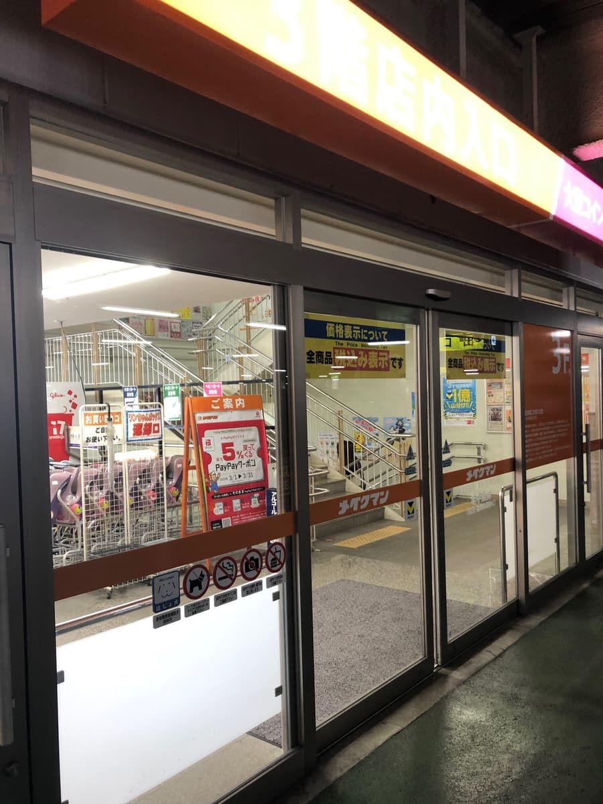
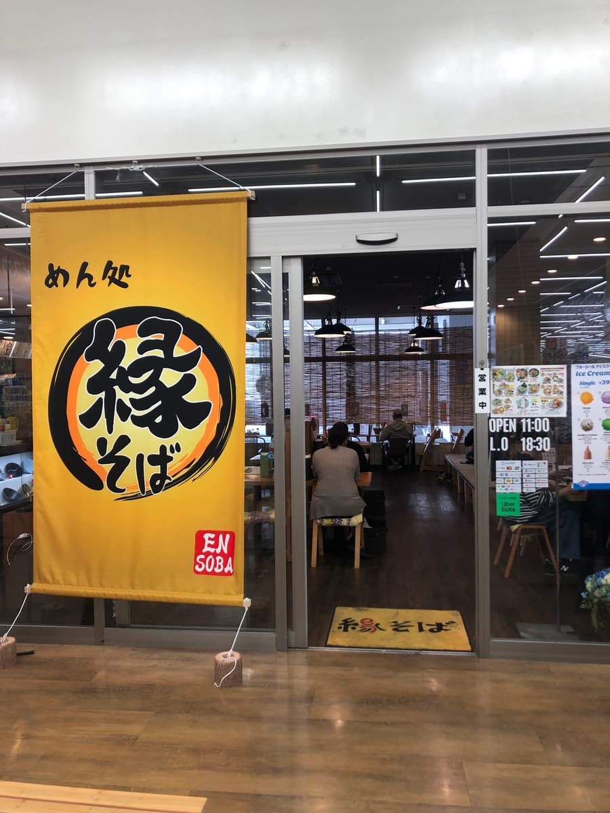
这次吃的是与店名同名的「缘面 大碗」。以前在浦添市伊祖学园通时期吃过，这是睽违已久的再访。搬到这里之后是第一次，所以我带着期待前往，想看看变成什么样子🚗✨ 因为在Makeman里面，几乎不用担心停车场，真的很感激。顺便购物时也很容易过去，从位置上来说，也有种家庭客和当地人容易使用的氛围。
店前有一面黄色的大「缘面」暖帘，相当醒目🌼 因为是在居家用品卖场内的餐饮店，起初想像会有点偏美食街的氛围，实际上是扎实的独立店面，店内也很沉稳。木纹的地板和桌子很有温暖感，座位数也给人比较宽松的印象。午餐时间或购物回程都很容易利用，能轻松吃冲绳面的气氛很棒🍜
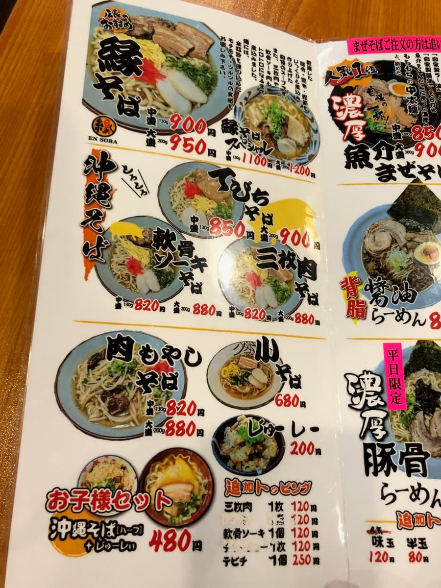
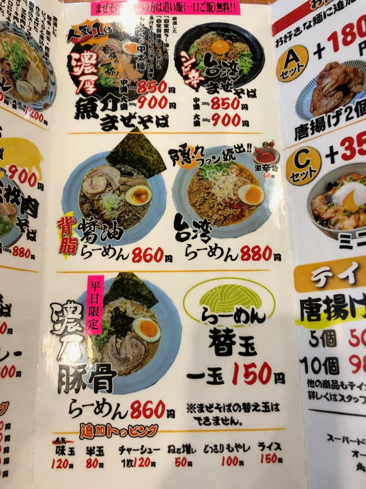
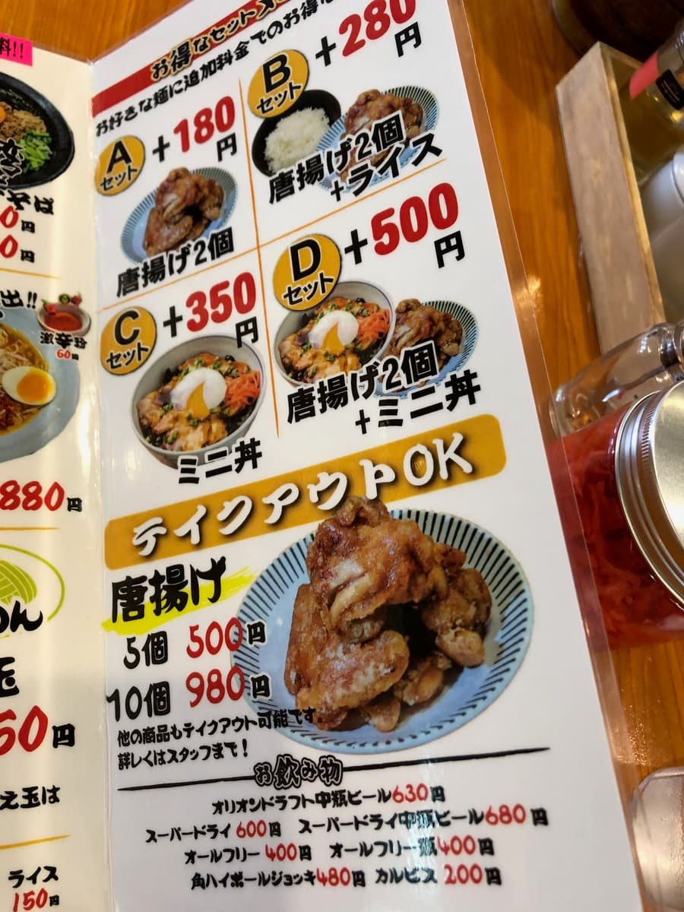
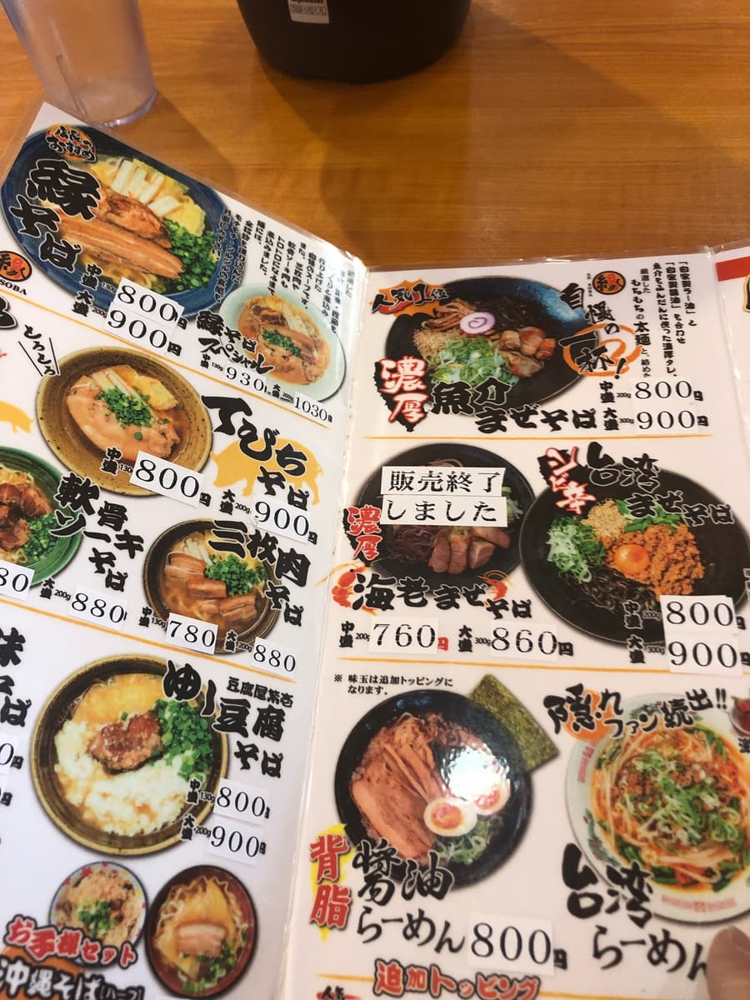
看菜单，光是冲绳面就有相当多种类。有缘面、猪脚面、三层肉面、软骨排骨面、肉豆芽面、小碗面等，另外还有海鲜拌面、台湾拌面、拉面类，甚至炸鸡套餐😳 与其说是冲绳面店，更像是能广泛吃到各种面的面处。炸鸡套餐也很划算，似乎也适合想大吃一顿的人。这次毫不犹豫地点了似乎是招牌菜单的「缘面 大碗」。
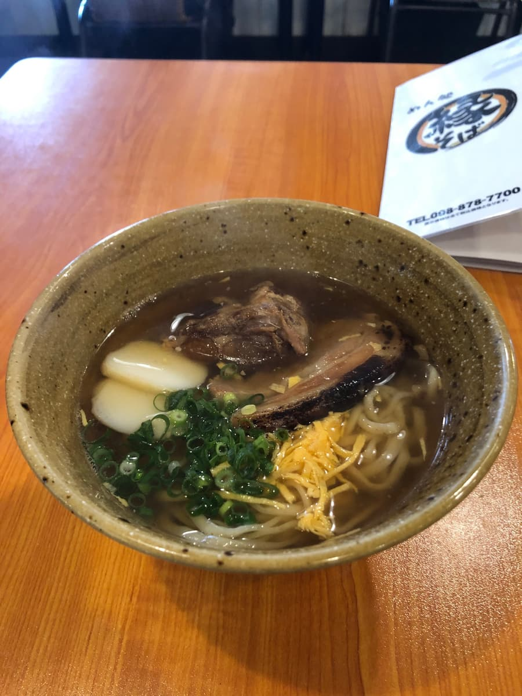
过了一会儿送上来的一碗，光看外观就是王道的冲绳面✨ 偏褐色的汤头，放着中细面、三层肉、软骨排骨、鱼板、蛋丝、葱，不过分华丽却很有整体感的视觉效果。碗也很沉稳，与汤的色泽很搭，看起来很好吃。
先从汤开始喝，似乎是用猪骨、昆布、柴鱼片熬成的汤，鲜味十足。能感受到猪骨的温润，不过整体来说柴鱼的风味稍微突出一些🐟 还是一如既往地好喝的汤呢😋
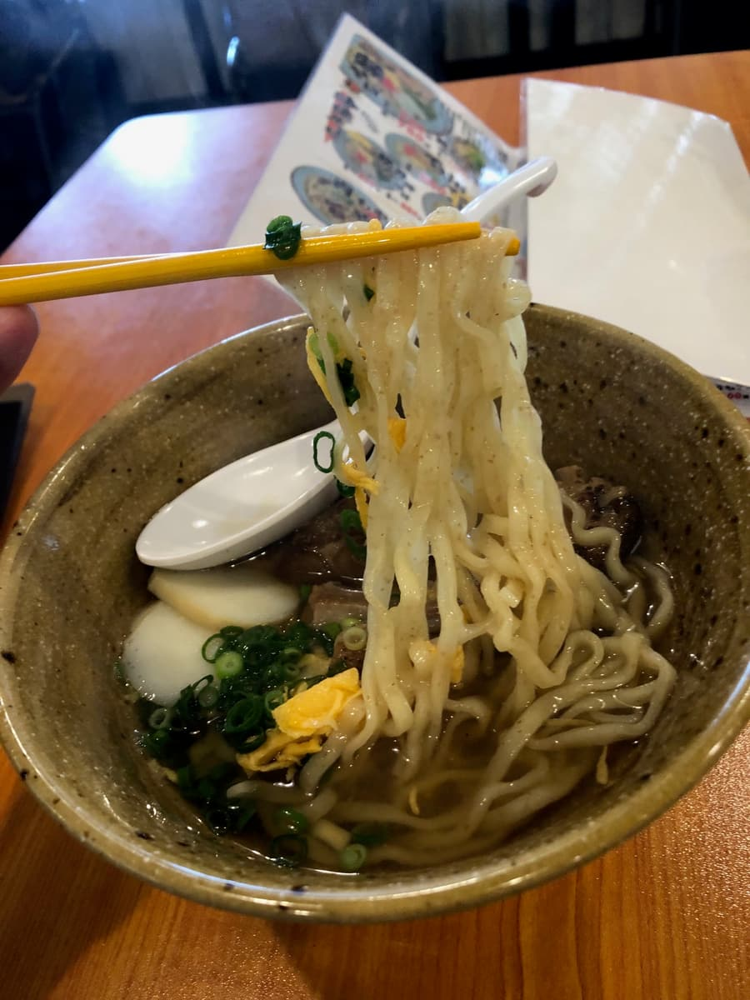
面条是揉进了全粒粉的中细、稍微弯曲的面。用筷子夹起来，外观滑溜，吃起来很Q弹呢🍜✨ 是滑顺好入口的类型。因为加了全粒粉，与一般的面条有着些微不同的存在感呢😊
配料有三层肉和软骨排骨，所以视觉上也很有满足感。三层肉、软骨排骨也都有软度🥩 老实说的感想是，虽然两者都很软，但我稍微在意筋感。正因为汤头和面条的印象很好，如果配料的肉能再炖得更入口即化一点，整体满意度会更高。味道不差，真的只差一点点的印象🤔
鱼板、蛋丝、葱也都有，确实有冲绳面特有的安心感。尤其加了蛋丝，外观多了一点华丽感🌿 葱的香气也与汤头很搭，整合了整体的平衡。与其说是强烈的冲击，更像是在购物途中能让人松一口气的一碗。包含位于Makeman内这个地点，我觉得是很适合日常使用的冲绳面店。全家一起去的话菜单选择也多，想吃冲绳面的人、想吃拌面的人、想加点炸鸡的人，都能各自满足👍
评分（10分/15分）：这次的「缘面 大碗」，汤头平衡很好，面条也是滑顺Q弹、容易入口的一碗🍜 能同时感受到猪骨与柴鱼的鲜味，同时柴鱼稍微突出的汤头很有安定感。面条也因为加了全粒粉而有个性，和汤头的搭配也很好。只是配料的三层肉和软骨排骨有些筋感，这点很可惜。如果能改善这点，我想会是满意度相当高的一碗。话虽如此，能在Makeman购物顺便吃到这个水准的冲绳面还是很开心呢😊 容易轻松走进去，菜单又丰富，是让人还想再试试其他菜单的店。
面：★★★✬☆（3.5）
汤头：★★★✬☆（3.5）
配料：★★★☆☆（3）
― 第1次造访（2023年10月） ―
2023年10月吃的。这家店是「第13届冲绳面集章活动（2023.10.1～2024.2.29）」的参加店，是我去的第4家／共34家😊
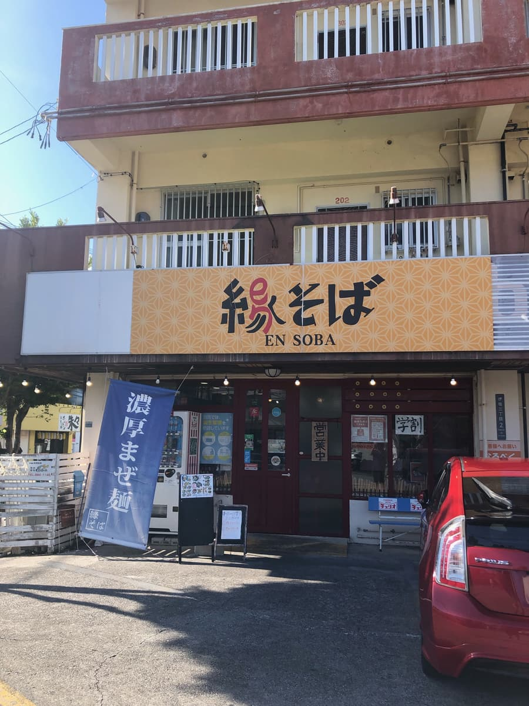
听说这家店的店面契约会在2023年12月底到期，但搬迁地点还没决定。因此集章活动又只到12月，所以决定早点去😁
集章手册上介绍的是与店名同名的「缘面」，所以本来就打算点「缘面」，菜单上也标示为店长推荐呢。
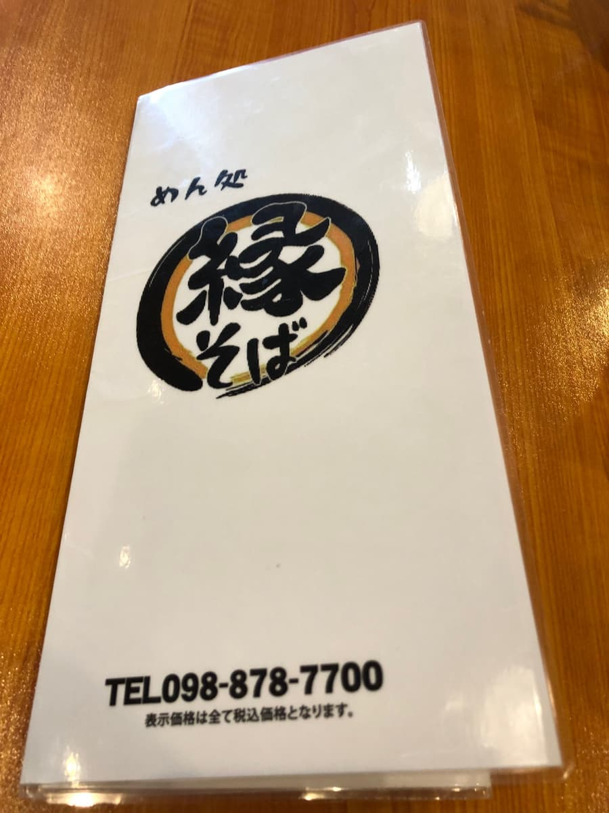
这家店不只有冲绳面，还有拌面和拉面呢。以前我觉得冲绳自动车道（中城SA）的拉面店「味千拉面」的冲绳面水准也相当高，所以这里的冲绳面应该也值得期待🤗
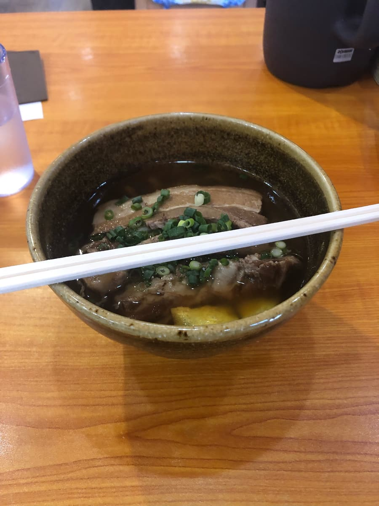
先喝汤。一入口就觉得「好好喝」😊 菜单上写着「精选猪骨、昆布、柴鱼片慢火熬煮而成的自豪汤头」，柴鱼高汤味突出，温和又美味。
接着吃面。菜单的说明是「面条揉进了全粒粉，请享受Q弹、滑溜的口感」，真的就像说的那样，是Q弹的细直面，也很好吃🤤
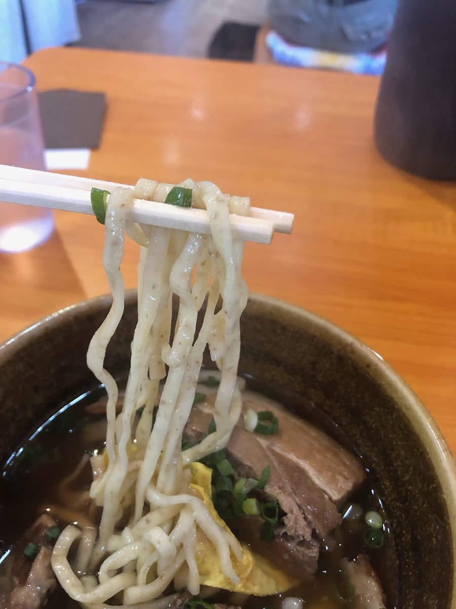
评分（10分/15分）：说不定有「卖拉面的冲绳面店水准都很高」这个定律🤗 柴鱼为底的汤头、加了全粒粉的Q弹面条，水准很高、很好吃。只是三层肉稍微有些筋感，觉得很可惜～ 2023年12月底之后的搬迁地点还没决定，不过我觉得是很好吃的冲绳面，真希望他们能想办法找到搬迁地点继续营业。
面：★★★✬☆（3.5）
汤头：★★★✬☆（3.5）
配料：★★★☆☆（3）